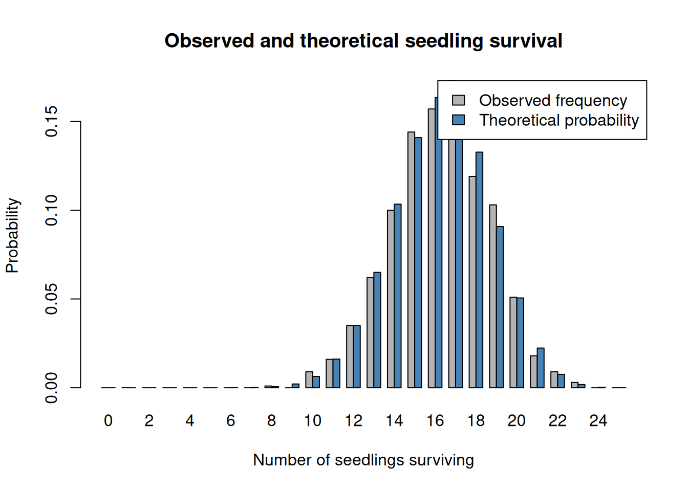
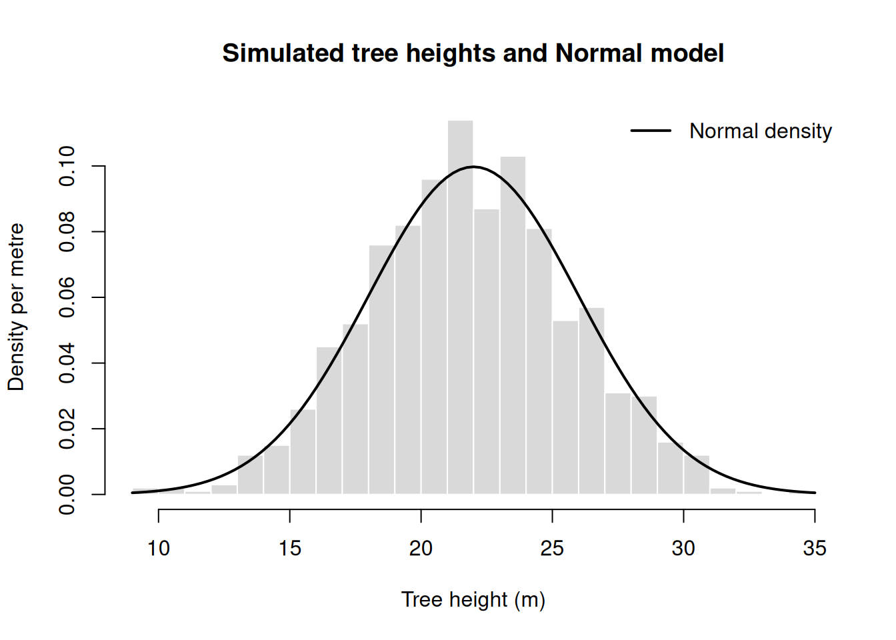

n = 25
p_survive = 0.65Probability distributions
Before you start, read the entries for the Binomial, Poisson, Negative Binomial, Normal, LogNormal and Beta distributions in the distribution supplement. They give the probability mass or density function, mean, variance and R functions of each distribution, which you will need in the exercises below. The first two exercises are worked examples, one for a discrete and one for a continuous distribution. Work through them before trying the remaining exercises.
1 Exercise 1: Seedling survival
Assume that each of 25 seedlings has probability \(0.65\) of surviving. Assume a Binomial model to describe this process.
- Calculate the probability that exactly 15 survive.
- Calculate the probability that at least 15 survive.
- Calculate the expected number and variance of survivors.
- Simulate 1,000 groups of 25 seedlings and compare the observed frequencies with the model probabilities.
1.1 Solution
Assume that each of 25 seedlings has probability \(0.65\) of surviving. Assume a Binomial model to describe this process.
Let
\[ X=\text{the number of seedlings that survive}. \]
The process has:
- a fixed number of trials, \(n=25\);
- two possible outcomes for each seedling: survives or does not survive;
- the same survival probability, \(p=0.65\);
- independent seedlings.
Therefore,
\[ X\sim\operatorname{Binomial}(n=25,p=0.65). \]
In R, the Binomial distribution uses:
dbinom()for probability mass;pbinom()for cumulative probabilities;rbinom()for simulation.
1.1.1 1. Probability that exactly 15 survive
We want to calculate
\[ P(X=15). \]
The Binomial probability mass function is
\[ P(X=x)= \binom{n}{x}p^x(1-p)^{n-x}. \]
Substituting \(x=15\), \(n=25\), and \(p=0.65\) gives
\[ \begin{aligned} P(X=15) &= \binom{25}{15}(0.65)^{15}(1-0.65)^{25-15}\\ &= \binom{25}{15}(0.65)^{15}(0.35)^{10}\\ &= \frac{25!}{15!10!}(0.65)^{15}(0.35)^{10}\\ &\approx 0.14. \end{aligned} \]
Thus, the probability that exactly 15 seedlings survive is approximately 0.14, or 14%.
In R, dbinom() performs this calculation:
prob_exactly_15 = dbinom(
x = 15,
size = n,
prob = p_survive
)
prob_exactly_15[1] 0.1408523The combinatorial term can also be calculated directly in R:
choose(25, 15)[1] 32687601.1.2 2. Probability that at least 15 survive
“At least 15” means 15 or more:
\[ P(X\geq 15)=P(X=15)+P(X=16)+\cdots+P(X=25). \]
By using the complement,
\[ P(X\geq 15) = 1-P(X\leq 14). \]
Using the Binomial formula, this is
\[ P(X\geq 15) = 1-\sum_{x=0}^{14} \binom{25}{x}(0.65)^x(0.35)^{25-x}. \]
Evaluating this sum gives
\[ P(X\geq 15)\approx 0.77. \]
Therefore, the probability that at least 15 seedlings survive is approximately 0.77, or 77%.
In R, pbinom() calculates \(P(X\leq x)\) so we take the complement:
prob_at_least_15 = 1 - pbinom(
q = 14,
size = n,
prob = p_survive
)
prob_at_least_15[1] 0.7711612The value q = 14 is used because
\[ P(X>14)=P(X\geq 15). \]
1.1.3 3. Expected number and variance of survivors
For a Binomial random variable,
\[ \mu=E[X]=np \]
and
\[ \operatorname{Var}(X)=np(1-p). \]
The expected number of survivors is therefore
\[ \begin{aligned} E[X] &=25(0.65)\\ &=16.25. \end{aligned} \]
The variance is
\[ \begin{aligned} \operatorname{Var}(X) &=25(0.65)(1-0.65)\\ &=25(0.65)(0.35)\\ &=5.69. \end{aligned} \]
In R:
expected_survivors = n * p_survive
variance_survivors = n * p_survive * (1 - p_survive)
c(
expected = expected_survivors,
variance = variance_survivors
)expected variance
16.2500 5.6875 The expected value, 16.25, does not need to be an integer. It represents the long-run average number of survivors across many groups of 25 seedlings.
1.1.4 4. Simulating 1,000 groups
We can simulate 1,000 groups using rbinom():
set.seed(123)
simulated_survivors = rbinom(
n = 1000,
size = n,
prob = p_survive
)
head(simulated_survivors)[1] 18 14 17 13 12 20Each value in simulated_survivors is the number of survivors in one simulated group.
To calculate the observed relative frequency for every possible number of survivors, use table():
support = 0:n
observed_frequency = as.numeric(
table(factor(simulated_survivors, levels = support))
) / length(simulated_survivors)
model_probability = dbinom(
x = support,
size = n,
prob = p_survive
)
comparison = data.frame(
survivors = support,
observed = observed_frequency,
theoretical = model_probability
)
round(comparison, 4) survivors observed theoretical
1 0 0.000 0.0000
2 1 0.000 0.0000
3 2 0.000 0.0000
4 3 0.000 0.0000
5 4 0.000 0.0000
6 5 0.000 0.0000
7 6 0.000 0.0000
8 7 0.000 0.0001
9 8 0.001 0.0006
10 9 0.000 0.0021
11 10 0.009 0.0064
12 11 0.016 0.0161
13 12 0.035 0.0350
14 13 0.062 0.0650
15 14 0.100 0.1034
16 15 0.144 0.1409
17 16 0.157 0.1635
18 17 0.173 0.1607
19 18 0.119 0.1327
20 19 0.103 0.0908
21 20 0.051 0.0506
22 21 0.018 0.0224
23 22 0.009 0.0076
24 23 0.003 0.0018
25 24 0.000 0.0003
26 25 0.000 0.0000The factor() step ensures that all possible values from 0 to 25 are included, even if a value does not occur in the simulation.
We can compare the observed and theoretical probabilities graphically:
barplot(
rbind(observed_frequency, model_probability),
beside = TRUE,
names.arg = support,
col = c("grey70", "steelblue"),
xlab = "Number of seedlings surviving",
ylab = "Probability",
legend.text = c("Observed frequency", "Theoretical probability"),
args.legend = list(x = "topright"),
main = "Observed and theoretical seedling survival"
)
The observed frequencies will not exactly equal the model probabilities because only 1,000 groups were simulated. They should generally be similar. With a larger number of simulated groups, the observed frequencies would usually become closer to the theoretical probabilities.
We can also compare the simulated and theoretical values for the first two questions:
c(
observed_exactly_15 = mean(simulated_survivors == 15),
theoretical_exactly_15 = prob_exactly_15,
observed_at_least_15 = mean(simulated_survivors >= 15),
theoretical_at_least_15 = prob_at_least_15
) observed_exactly_15 theoretical_exactly_15 observed_at_least_15
0.1440000 0.1408523 0.7770000
theoretical_at_least_15
0.7711612 2 Exercise 2: Tree heights under a Normal model
Suppose the height \(X\) of a randomly selected tree follows a Normal model with mean 22 m and standard deviation 4 m:
\[ X\sim\operatorname{Normal}(22,4^2). \]
- Calculate the probability that a tree is between 18 m and 26 m tall.
- Find the height below which 95% of trees fall under this model.
- Simulate 1,000 tree heights. Compare a density-scaled histogram with the model density and explain any differences.
2.1 Solution
Suppose the height \(X\) of a randomly selected tree follows a Normal model with mean 22 m and standard deviation 4 m.
The observational unit is one tree and height is a continuous random variable, so we calculate probabilities for intervals of height. Note that the model above is written with the variance, \(4^2\), whereas the sd argument in R takes the standard deviation, 4 m.
In R, the Normal distribution uses:
dnorm()for probability density;pnorm()for cumulative probabilities;qnorm()for quantiles;rnorm()for simulation.
# Parameters of the tree height model (in metres)
height_mean = 22
height_sd = 42.1.1 1. Probability that a tree is between 18 m and 26 m tall
The probability of an interval is the cumulative probability at its upper limit minus the cumulative probability at its lower limit:
\[ P(18<X\leq26)=P(X\leq26)-P(X\leq18). \]
In R, pnorm() calculates \(P(X\leq x)\), so we subtract two calls:
# Subtract the probability below 18 m from the probability below 26 m
prob_18_to_26 = pnorm(q = 26, mean = height_mean, sd = height_sd) -
pnorm(q = 18, mean = height_mean, sd = height_sd)
prob_18_to_26[1] 0.6826895Thus, the probability that a tree is between 18 m and 26 m tall is approximately 0.68, or 68%. Including or excluding the endpoints makes no difference, because the probability of any exact height is zero in a continuous model.
2.1.2 2. Height below which 95% of trees fall
We want the height \(x\) such that
\[ P(X\leq x)=0.95. \]
This is the 95th percentile (i.e., the 0.95 quantile) of the distribution. In R, qnorm() calculates it:
# Quantile of the model at a cumulative probability of 0.95
height_95 = qnorm(p = 0.95, mean = height_mean, sd = height_sd)
height_95[1] 28.57941The height is approximately 28.6 m. That is, under this model 95% of trees are shorter than 28.6 m and 5% are taller.
2.1.3 3. Simulating 1,000 tree heights
We can simulate 1,000 tree heights using rnorm():
# Set a seed so that the simulated sample is reproducible
set.seed(seed = 101)
tree_heights = rnorm(n = 1000, mean = height_mean, sd = height_sd)
head(tree_heights)[1] 20.69585 24.20985 19.30022 22.85744 23.24308 26.69587Each value in tree_heights is the height of one simulated tree. We can now plot a histogram of the sample and add the density of the model with curve():
# Histogram on the density scale (probability = TRUE) so that it is comparable to the curve
hist(
x = tree_heights, breaks = 25, probability = TRUE,
col = "grey85", border = "white",
xlab = "Tree height (m)", ylab = "Density per metre",
main = "Simulated tree heights and Normal model"
)
# Add the density of the model that generated the sample
curve(
dnorm(x = x, mean = height_mean, sd = height_sd),
add = TRUE, lwd = 2
)
legend(
"topright", legend = "Normal density",
lty = 1, lwd = 2, bty = "n"
)
The histogram uses density scaling because the curve also shows density (with counts on the vertical axis the two would not be comparable). The bars do not match the curve exactly because they summarise one sample of 1,000 trees, and their heights also depend on the width of the bins. With a larger number of simulated trees, the histogram would usually become closer to the model density.
3 Exercise 3: Checking for overdispersion
We are going to use a built-in dataset in R on counts of tobacco hornworm, in agricultural experimental units treated with six different insecticides. We can load the data as follows:
data(InsectSprays, package = "datasets")Calculate the mean and variance for
count. Is there evidence of overdispersion?Repeat the same calculations but now do it separately for each
spraytreatment (tip: use the tools for data transformation we learnt in Chapter 1). Is there still evidence of overdispersion?Which model would you use for
countwhen ignoring thespraytreatment and which model would you try when doing it separately for eachspraytreatment?Calculate the parameters of the Negative Binomial using the mean and the variance of the sample (tip: check the formulae in the Negative Binomial entry of the supplement). Compare the probability mass of the empirical distribution and the Negative Binomial with the parameters that you just calculated. How well does the model capture the variation in the data?
4 Exercise 4: Overdispersed quadrat counts
Let’s assume a Negative Binomial distribution with a mean (\(\mu = 6\)) and shape parameter (\(k = 0.8\)). The formulae and R functions are in the Negative Binomial entry of the supplement.
- Calculate the theoretical mean and variance using the formulas. Then verify them using
dnbinom()and weighted sums. - Generate a sample of size 500.
- Calculate the mean and variance of this sample in R.
- Compare the Negative Binomial distribution with a Poisson distribution having the same mean. How do they differ? What is the variance/mean ratio of the sample? Plot their probability mass functions.
5 Exercise 5: Body mass under a LogNormal model
Suppose body mass \(X\) in grams follows a LogNormal model with meanlog = log(30) and sdlog = 0.5. These two parameters are the mean and the standard deviation of the logarithm of body mass. The formulae for the median and the mean are in the LogNormal entry of the supplement.
- Calculate the median and the mean body mass of the model. Explain why they differ.
- Calculate the probability that body mass exceeds 50 g and the 95th percentile.
- Simulate 500 body masses with seed 202. Make density-scaled histograms on the original and log scales. Describe their shapes.
- Add the LogNormal density of the model to the original-scale histogram. Explain what the comparison can and cannot tell you about field data.
6 Exercise 6: Vegetation cover under a Beta model
Suppose \(X\) is the fraction of a quadrat covered by vegetation, measured as a continuous variable, and that \(X\) follows a Beta model with \(a=2\) and \(b=5\). In R these parameters are shape1 and shape2. The formulae for the mean and the variance are in the Beta entry of the supplement.
- Calculate the mean and the variance of the model. Express the mean as a percentage of the quadrat.
- Calculate \(P(X<0.20)\) and the 95th percentile of cover. Explain both results.
- Simulate 500 cover fractions with seed 303. Plot a density-scaled histogram and add the Beta density of the model.
- A field survey also records some quadrats with exactly zero cover. Explain why the proposed Beta model cannot describe those observations directly.